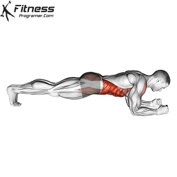
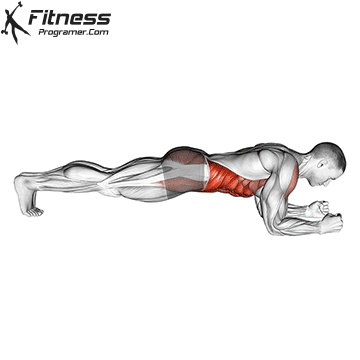

In today’s fast-paced world, time is of the essence when it comes to taking care of our bodies. For many, fitting regular exercise into their hectic schedules can seem almost impossible. With this in mind, home workouts and online workout plans have become increasingly popular.
Online training can be just as effective as going to the gym, but it largely depends on how you approach your workout routine. Both online training and going to the gym have their advantages and disadvantages, and the effectiveness of each method depends on your individual preferences, fitness goals, and the equipment available.
In this article, we’ll analyze the pros and cons of home workouts vs gym, as well as determine if an online workout plan is effective enough to replace the gym
PROS AND CONS OF WORKING OUT AT HOME
It’s important to note that there are some benefits — as well as drawbacks — to working out at home.
Pros:
- Convenience: Working out at home is convenient since you don’t have to worry about spending time and money traveling to the gym.
- Privacy: Home workouts provide privacy, so you can go through your routine without feeling self-conscious or judged.
- Flexibility: With a home gym, you have more flexibility in your workout routine. You can choose the exercises and equipment that suit your needs and preferences, and you can take breaks and adjust your schedule as needed.
- Variety of options: There are a variety of different home workout options, from online classes to videos and even bodyweight exercises.
If you go the home workout route, an online workout plan may be the best option for you. Visit nothing2queen.com for a range of fitness routines, nutrition plans, and inspiring success stories that will keep you motivated.
Cons:
- Lack of guidance: Home workouts can be difficult if you don’t know what you’re doing, as there’s no one to provide guidance.
- Equipment needed: You’ll need the proper equipment for certain exercises, which means investing in items like weights, bands and machines.
- Distractions: It can be easy to get distracted at home, especially if you have kids or pets.
- Space limitations: Lack of space may limit the type and variety of exercises you can do.
ARE HOME WORKOUTS EFFECTIVE AS A GYM?
If done correctly, home workouts can be just as effective as working out at a gym. The key is finding an online program that provides detailed instructions and guidance from certified professionals who understand your fitness goals, this will ensure that you are performing the exercises correctly.
Additionally, if you don’t want to invest in equipment for your home workouts, there are still plenty of bodyweight exercises that will keep you fit and strong without the need for any special equipment.
Overall, it’s important to understand that home workouts may not be for everyone. Sticking to an at-home cardio workout routine takes dedication and motivation, and if you find that you’re easily distracted or bored, it may be better for you to join a gym. However, if you are looking for convenience and privacy, an online workout plan could be just what you need. With the proper guidance, home workouts can be just as effective as gym workouts — with the added comfort of your own home.
HOW TO TRAIN AT HOME EFFECTIVELY & SAFELY
Training at home can be an effective and safe way to stay fit and healthy. Here are some tips for training at home effectively and safely:
- Start with a warm-up: Before you start your workout, warm up your muscles with some light cardio exercises, such as jogging in place or jumping jacks. This will help prevent injury and prepare your body for exercise.
- Choose exercises that suit your fitness level: Select exercises that are appropriate for your fitness level and goals. If you’re a beginner, start with bodyweight exercises like squats, lunges, push-ups, and planks. Gradually increase the intensity and duration of your workouts as you become more comfortable.
- Use proper form: Correct form is essential to prevent injury and maximize the benefits of your workouts. Follow proper form guidelines for each exercise, and start with lighter weights or resistance bands until you have mastered the form.
- Stay hydrated: Drink plenty of water before, during, and after your workout. This will help you stay hydrated and maintain your energy levels.
- Take breaks: Allow yourself rest periods between exercises or sets. This will help prevent exhaustion and reduce the risk of injury.
- Incorporate a variety of exercises: To prevent boredom and plateauing, mix up your exercises and challenge your body in different ways. You can try different types of workouts such as cardio, strength training, and yoga.
- Cool down and stretch: After your workout, cool down your body with some light cardio exercises and stretch your muscles to prevent stiffness and soreness.
- Use equipment safely: If you’re using equipment like dumbbells, resistance bands, or stability balls, make sure to use them safely and follow the manufacturer’s instructions.
- Seek guidance if necessary: If you’re new to working out or have specific health concerns, consider seeking guidance from a personal trainer or healthcare provider before starting a new exercise routine.
By following these tips, you can safely and effectively train at home and achieve your fitness goals.
HOW TO CHOOSE AN ONLINE TRAINING PROGRAM
When it comes to choosing an online training program, there are a few things you should consider
Certification: Check that the trainer providing the program is certified and experienced in developing workout routines. Certification: Check that the trainer providing the program is certified and experienced in developing workout routines.
Customization: Make sure the program is tailored to your goals and fitness level by offering customization options such as modifying exercises or intensity levels.
Accessibility: Ensure that the program is easily accessible, with online videos and tutorials so you can watch them at any time.
Motivation: Look for programs that come with additional tools such as nutrition plans, success stories and community support to help keep you motivated.
By taking the time to choose an appropriate home workout plan, you can be sure that you are getting the most out of your workouts — from the comfort and safety of your own home. With the right guidance and motivation, home workouts can be just as effective as gym workouts.
WHAT HOME GYM EQUIPMENT DO YOU NEED TO TRAIN AT HOME?
Having the right equipment at home can make your workouts more effective. Here are some of the essentials you’ll need:
Dumbbells and/or kettlebells: Used for strength training, these items are great for building muscle and working on endurance.
Resistance bands: These looped bands come in various sizes and strengths, and can be used for a wide range of exercises.
Yoga mat: A yoga mat is essential if you plan on doing any floor-based exercises, as it provides cushioning and grip.
Foam roller: Foam rollers are great for stretching, relieving muscle tension and releasing tightness in your body
Stability ball: Often used in Pilates and yoga, a stability ball can be used to increase balance and core strength.
Pull-up bar: If you want to work on your upper body strength, a pull-up bar is essential. Be sure to buy one that’s sturdy and can handle your weight.
10 MOST EFFECTIVE HOME EXERCISES
SUMO SQUATS
 This exercise targets the legs, glutes, and core muscles. Simply stand with feet hip-width apart, lower down into a squat position, and return to standing.
PUSH-UPS:
This exercise targets the legs, glutes, and core muscles. Simply stand with feet hip-width apart, lower down into a squat position, and return to standing.
PUSH-UPS:
 Push-ups are a classic exercise that target the chest, shoulders, triceps, and core. Start in a plank position and lower your body to the ground, then push back up to the starting position.
LUNGES:
Lunges target the legs and glutes. Start with one foot in front of the other and bend both knees, lowering your body until your back knee nearly touches the ground. Alternate legs with each rep.
PLANKS:

Planks target the core muscles. Begin in a push-up position, then lower down onto your forearms. Hold your body in a straight line for 30 seconds to a minute.
CHAIR DIPS
Chair dips, also known as tricep dips, are a simple yet effective exercise that can be done at home using a sturdy chair or bench. Chair dips target the triceps, shoulders, and chest muscles, making them a great exercise for strengthening the upper body.
DIPS BETWEEN CHAIRS
Dips between chairs, also known as parallel bar dips, are a challenging bodyweight exercise that can be performed at home using two sturdy chairs or other elevated surfaces. Dips between chairs target the triceps, shoulders, chest, and core muscles, making them a great home workout for strengthening the upper body.
TABLE INVERTED ROW
The table inverted row is a bodyweight exercise that targets the back and biceps using a sturdy table or other elevated surface. The table inverted row is a great exercise to do at home because it doesn’t require any special equipment and can be done almost anywhere with a sturdy table or other elevated surface.
WATER BOTTLE HAMMER CURL
The water bottle hammer curl is a great home exercise to do at home because it doesn’t require any special equipment and can be done almost anywhere. To increase the intensity of the exercise, you can try using heavier water bottles or by performing the exercise with one arm at a time.
BURPEES:
Push-ups are a classic exercise that target the chest, shoulders, triceps, and core. Start in a plank position and lower your body to the ground, then push back up to the starting position.
LUNGES:
Lunges target the legs and glutes. Start with one foot in front of the other and bend both knees, lowering your body until your back knee nearly touches the ground. Alternate legs with each rep.
PLANKS:

Planks target the core muscles. Begin in a push-up position, then lower down onto your forearms. Hold your body in a straight line for 30 seconds to a minute.
CHAIR DIPS
Chair dips, also known as tricep dips, are a simple yet effective exercise that can be done at home using a sturdy chair or bench. Chair dips target the triceps, shoulders, and chest muscles, making them a great exercise for strengthening the upper body.
DIPS BETWEEN CHAIRS
Dips between chairs, also known as parallel bar dips, are a challenging bodyweight exercise that can be performed at home using two sturdy chairs or other elevated surfaces. Dips between chairs target the triceps, shoulders, chest, and core muscles, making them a great home workout for strengthening the upper body.
TABLE INVERTED ROW
The table inverted row is a bodyweight exercise that targets the back and biceps using a sturdy table or other elevated surface. The table inverted row is a great exercise to do at home because it doesn’t require any special equipment and can be done almost anywhere with a sturdy table or other elevated surface.
WATER BOTTLE HAMMER CURL
The water bottle hammer curl is a great home exercise to do at home because it doesn’t require any special equipment and can be done almost anywhere. To increase the intensity of the exercise, you can try using heavier water bottles or by performing the exercise with one arm at a time.
BURPEES:
 Burpees are a full-body home exercise that can help to build strength and endurance. Begin in a standing position, then drop to the ground, perform a push-up, jump your feet forward, and jump up to standing.
MOUNTAIN CLIMBERS:
Burpees are a full-body home exercise that can help to build strength and endurance. Begin in a standing position, then drop to the ground, perform a push-up, jump your feet forward, and jump up to standing.
MOUNTAIN CLIMBERS:

Mountain climbers are a great home exercise for working your entire body, especially your core and lower body. They are a dynamic, high-intensity exercise that can be done almost anywhere without any equipment.
SUMMARY
Home workouts can be just as effective as gaym workouts, provided that you have the proper guidance and equipment. Before starting a home workout routine, make sure to choose an online plan that is tailored to your goals and fitness level. Invest in some basic home gym equipment such as dumbbells, resistance bands and a yoga mat to get the most out of your workouts. With the right guidance and motivation, home workouts can help you achieve your fitness goals — from the safety of your own home.